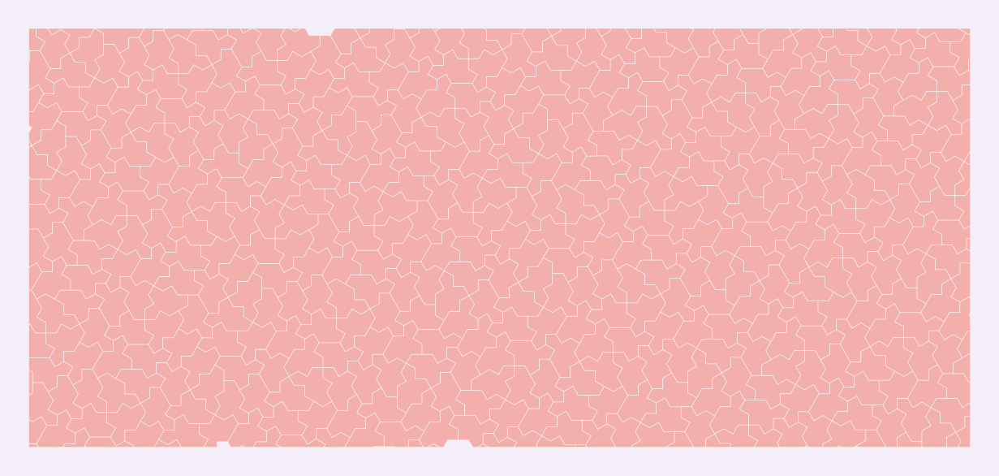

Biology and medicine
Geometric scaffolds for packing, growth, folding, and implant design studies.
Clean scaffolds for messy questions
Natural systems are full of packing, branching, growth, folding, and surface constraints — and they are conspicuously non-periodic. Aperiodic monotile patches are not biological models by default, but they are clean geometric scaffolds for asking better questions: what does growth on a structured-but-non-repeating substrate look like? How do cells or crystals pack when the template forbids periodicity?[6][13]

For implants and tissue scaffolds the mechanical argument mirrors materials science: aperiodic strut layouts avoid the aligned failure planes and resonances of periodic lattices while remaining fully specified for regulatory review — every strut position is deterministic and documentable.[2]
Directions
- Morphogenesis, shell growth, protein folding, cellular packing, and neural geometry studies
- Implants, prosthetics, vascular stents, tissue scaffolds, and surgical planning
- Crystal nucleation templates, catalysts, zeolites, and molecular cage geometry
See also
Categories: Research frontiers